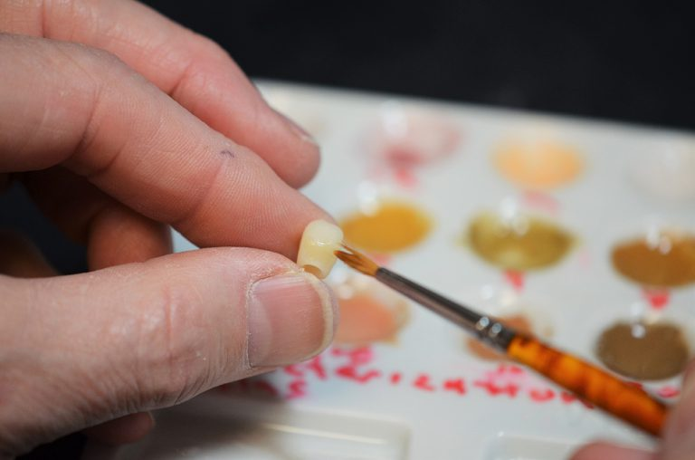

At Maine Integrative Dentistry, we see the big picture of how your oral health fits in with your overall health. Our goal is to improve your smile, eating comfort and health while conserving your natural teeth as much as possible. We use the latest technologies and evidence-based research in treating your oral health as an integrated system. We also maintain an extensive network of trusted practitioners who can provide specialized treatments that may be beyond our scope. Throughout your experience, we remain proactive and engaged at every step of the way
Without thinking about it, we subject our teeth to tremendous stresses each day: chewing with hundreds of pounds of force; jaw expansion and contraction; and acidity caused by food and drink, to name a few. As life expectancy extends into the 80s and 90s, awareness of these stresses today is critically important for the future.
At Maine Integrative Dentistry, our philosophy is to preserve your natural teeth with the highest quality oral care, prescribing minimally invasive, yet long lasting restorations whenever necessary. We focus not only on your teeth, but on your overall health. We look for evidence of sleep apnea (grinding and acid reflux), gum disease (inflammation in the mouth that can be connected to heart disease, diabetes and other inflammatory diseases), and oral cancer at every visit. And for your benefit we use the most innovative techniques available, from low dose digital x-rays, digital imaging, and milling of crowns on-site and in a single visit.
We spend time with you. You are our focus. We look at what is best for you in the immediate and the long-term, providing clear communication so that you may make better choices and informed decisions about your oral health.
If you want to get in contact with us, call us at 207-775-0001 or email us at patientcare@drkerr.com. Our office is located in Portland, Maine.
